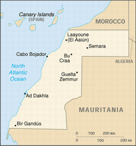
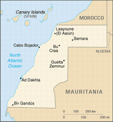
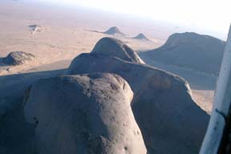
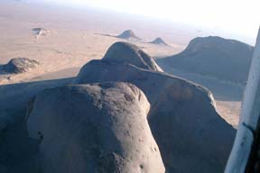

Overview
The Western Sahara, given its name in 1975 by UN, is the last African colonial state still to declare its independence. It extends over 285,000 square kilometers of predominantly sandy plains. The Western Sahara's map borders are a result of colonial agreements made between France, Spain and Morocco in 1900, 1904 and 1912. But the sandy Atlantic coast to the West, the Quarkziz and Oued Draa mountain chain to the north and the barren desert to the east and south form natural boundaries to the region.
Topographical Zones
While mainly low lying sandy plains, the region can be roughly divided into 3 topographical zones:
- The steep mountainous rocky desert formed by the chain of Atlas Mountains and the hills of Zemmour, forms the north east zone.
- The river basins of the wadi Draa to the north and the Jat to the west where water gather in the depression.
- The 3rd, inland zone consists of flat low-lying plains or ergs and sand dunes. The ground is too porous for water to retain the autumn rain and too flat to allow it to flow so it accumulates underground in numerous wells.
Fact Box
- W. Sahara covers 284,000 sq KM which is approximately 1/10th the size of its neighbour Algeria, and one half size of France.
- It is bordered by Morocco to the North, Algeria to the east, Mauritania to south and the north Atlantic ocean to the west.
- It is about the size of Colorado.
Districts and Cities
The territory is divided into 4 districts: Laayoune, Essamara, Boujdour and Oued Essemara. Part of the Sahara is extremely arid and is almost entirely covered with stones, gravel and sand. Rocky highlands in the east reach 1560 ft. The main cities are Laayoune (formerly El Aaiun), the capital, Dakhla (formerly Villa Cisneros), Boujdour and Essamara.
 

Typical Sahara Landscape
The place I was assigned to was almost half rocky and the water was salty. We used to collect water from a nearby well by a water pump. The water had to be sterilized mixing chlorine. While we used to fill the water in the water reservoirs, it was not possible to use it for 24 Hrs. After it was proved that the chlorine level is permissible to use, only then the water was used for bathing and washing purposes. It was a pretty arduous job and was a weekly affair. Well, don't forget to rinse your body after shower with two bottles of clean water, else you would land up as bald headed prematurely old guy. None would recognize you.


 
